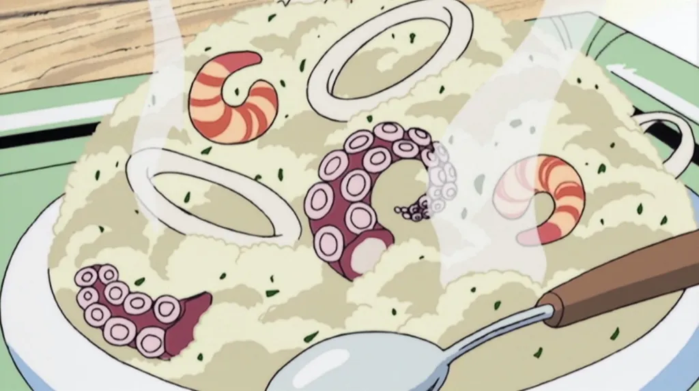

Seafood Risotto

Despription
Ingredients
- 2 celery sticks
- 2 onions
- 2 bay leaves
- 5 garlic cloves
- Left over chicken bones
- 2 pre cooked octopus tentacles
- Shrimp
- Squid rings
- 1.5 cup of rice
- 1 cup of white wine
- 4 tbs of butter
- Parmesan cheese
- Parsley
- Chives
Steps
- Prepare to make the chicken broth by washing the chicken bones in a colender and chopping 2 celery stock, and 2 onions.
- Add these ingredients to a pot of water with 5 cloves of garlic and 2 bay leaves. Bring this to a boil.
- Once this boils, bring it down to a simmer and leave it on for roughly 3-4 hours.
- After time is up pour this into a bowl through a colender.
- Strain this 1 or 2 more times and salt to taste. Set the broth on a side burner with low heat for now.
- Next we will prepare the risotto.Start by dicing half or a whole onion (unless you don't like onion in yours)
- Pour some olive oil in a pan and bring it up to temp. Add the onions to this pan.
- Once the onions start to become translucent add about 1.5 cups of rice.
- Stir until it the rice and onions are throughly mixed.
- Once the rice is toasted you will want to add 1 cup of white wine to deglaze. This will cook off as you stir.
- We will now need to add our chicken broth little by litte. I reccomend doing a ladel at a time then stiring with a wooden spoon until the broth is absorbed by the rice.
- Continue this until your rice is al dente. Bring down to a low heat.
- Now get another pan add a bit of oil add your shrimp.
- Once the shrimp is about half cooked add your squid rings and chopped octopus legs.
- Cook this on medium to high heat for a few minutes add salt and pepper to taste
- Once the seafood is almost done we will need to add the finishing touches to our risotto. Slcie your parsley and butter. Add this.
- Stir with a wodden spoon until is creamy.
- Top with parmesan cheese and we are done!
- To plate put the risotto down first then place your seafood around it randomly. Top with chopped chives.
- Enjoy!
Home